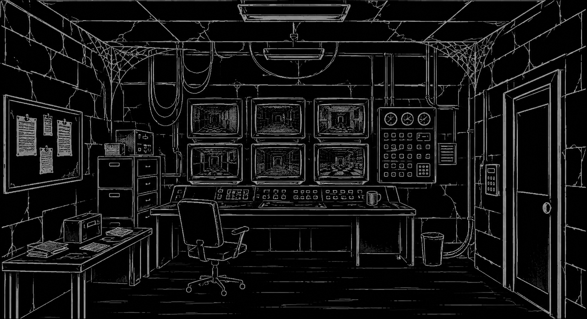

Comunicação // Desenvolvedores
Entre em contato
Encontrou um problema, tem uma sugestão ou quer deixar uma opinião sobre o jogo? Envie uma mensagem para a equipe.
A Luz que Resta // Wiki
Registros reunidos para quem ainda procura respostas.

Canal de comunicação
✉
Fale com a equipe
Use o formulário ao lado para preparar uma mensagem. O envio será aberto no aplicativo de e-mail configurado no seu dispositivo.
O endereço dos desenvolvedores precisa ser configurado no arquivo script.js. Consulte o README incluído no projeto.